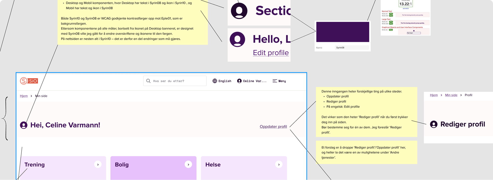
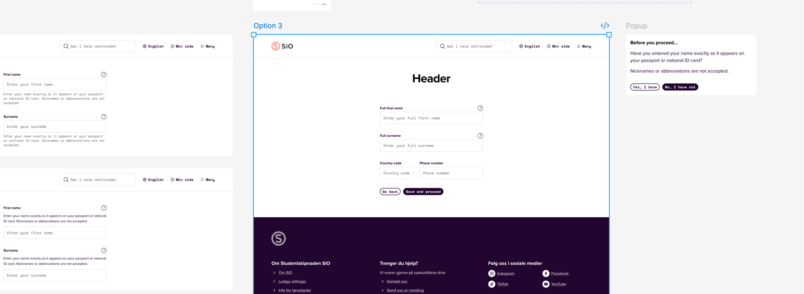

To år som deltidsansatt Junior Interaksjonsdesigner i Studentsamskipnaden i Oslo (SiO) — studentsamskipnaden for 29 studiesteder i Oslo og omegn, ved siden av studiene. Two years as a part-time Junior Interaction Designer at Studentsamskipnaden i Oslo (SiO) — the student welfare organisation for 29 institutions in and around Oslo, alongside my studies.

Jeg har jobbet i Studentsamskipnaden i Oslo siden januar 2024. Der har jeg ansvar for forbedring av nettsider basert på brukerinnsikt. Tidligere har jeg vært den eneste designeren i teamet. Arbeidet inkluderer analyser av dagens situasjon og identifisering av nye krav. Deretter har jeg utformet skisser og høyoppløselige prototyper i Figma, som har blitt implementert gjennom samarbeid med utviklere. Erfaringen har lært meg å omsette innsikt til designvalg, og å kommunisere designperspektivet tydelig til resten av teamet. I have worked at Studentsamskipnaden i Oslo (SiO), the student welfare organisation in Oslo, since January 2024. I am responsible for improving the website based on user insights. Previously, I was the only designer on the team. My work involves analysing the current situation and identifying new requirements. I then create sketches and high-fidelity prototypes in Figma, which are implemented in collaboration with developers. This experience has taught me to translate insights into design decisions and communicate the design perspective clearly to the rest of the team.

I SiO har jeg hatt mange forskjellige arbeidsoppgaver. Blant annet har jeg vært med på å lage en ny innmeldingsside til SiO Athletica. Jeg har også bidratt med diverse short-wins, som for eksempel oppdatering av boligsidene, kartlegging av sidemaler, om-oss siden til SHoT undersøkelsen, og arbeid med fargevariabler til den nye foreningerløsningen. Ellers har jobben gått i løpende oppdateringer og skisser på forespørsel. At SiO, I have worked on a wide range of tasks, for example designing the new sign-up page for SiO Athletica. I have also contributed to several quick wins, such as updating the housing pages, mapping page templates, working on the About Us page for the SHoT survey, and developing colour variables for the new student associations solution. The rest of my work has involved ongoing updates and creating sketches on request.